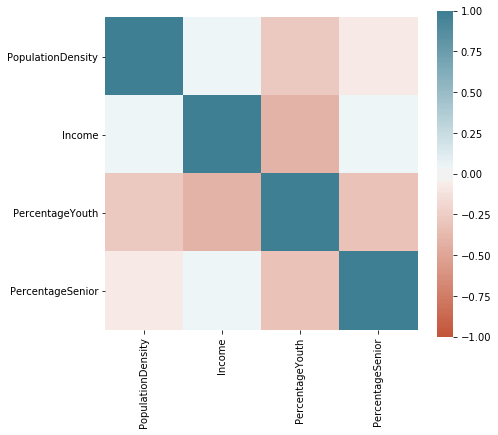
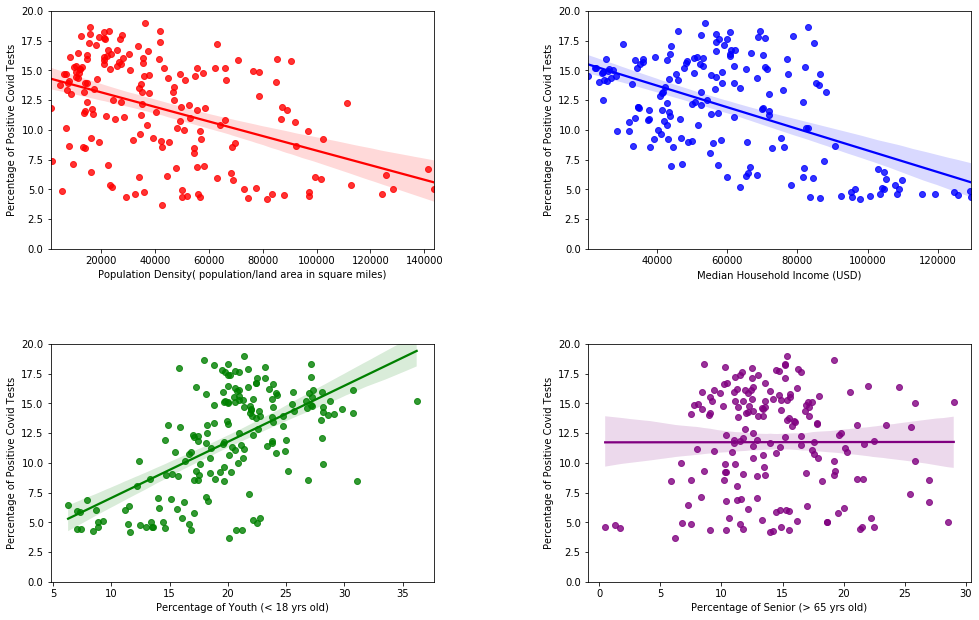
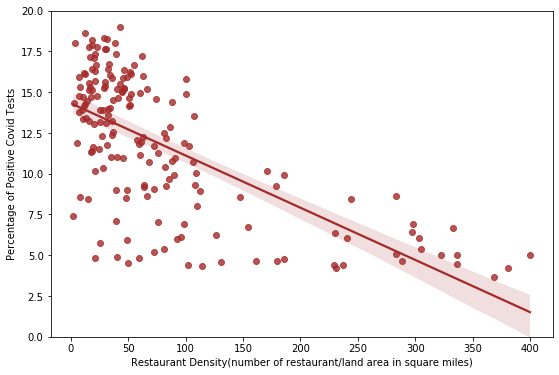
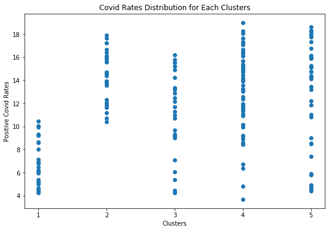
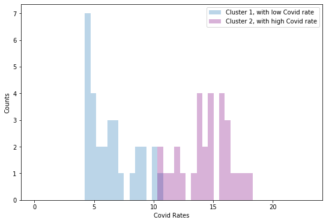
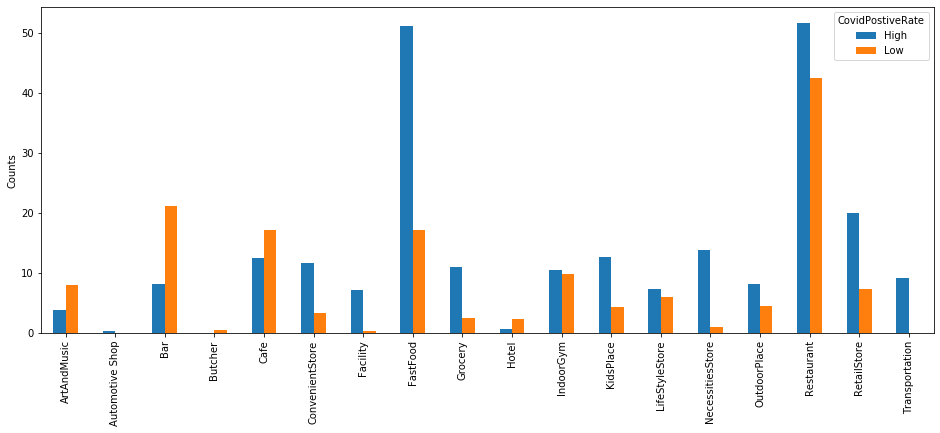

Four interesting demographic factors have been chosen. They are population density calculated as population per square mile, median household income, percentage of youth people who are younger than 18 years old
and percentage of senior people who are older than 65 years old. Higher people density means a higher chance to be infected in the community.
higher income promises better and enough personal protective equipments, it also means a higher chance to stay at or move to a safe place rather than risk oneself to work outside.
Percentage of youth and senior are both interesting factors to consider. Kids are likely to have more social acitivities and senior people are more vulnerable to virus. How these factors are related to Covid positive rates can be easily learnt by simple linear regression.
- Correlation Matrix of Features
-
Correlation between each pair of demographic features has been checked. No clear correlation is appeared except for the pair of income and percentage of Youth with a correlation coefficiency of -0.41. Since data are only used for exploratory analysis, multicollinearity is not an issue, and both features are kept.

Figure 2. Correlation matrix of demographic features.
- Correlation between demographic factors and Covid rate
-
Simple linear regression on Covid positive rate with each of the demographic factors has been done (Figure 3).

Figure 3. Simple linear regression of Covid rate on demographic facotrs. The fitting for population density has an r-squared value of 0.19, correlation coefficient of -0.44, p value of 1.10e-9.
The fitting for median income has an r-squared value of 0.29, correlation coefficient of -0.53, p value of 1.61e-14.
The fitting for percentage of youth has an r-squared value of 0.36, correlation coefficient of 0.60, p value of 8.11e-19.
The fitting for percentage of senior has an r-squared value of 2.04e-06, correlation coefficient of 0.001, p value of 0.98.
Population density and hosehold income are both negatively correlated with Covid rate. Although areas with midium level of income don't show a simple type of Covid rate, extreme poor or rich areas do show the trend:
areas with highest household income (higher than $90,000), same as our intuition, all have lower Covid rates,
and areas with lowest income (lower than $20,000) all have high Covid rate.
As for population density, how crowded areas have lower Covid rate is hard to explain to me.
It's also interesting to see that the percentage of Senior has no contribution to covid rates, while youth ratio is positive correlated with Covid rates.
A main possible cause of the positive rate difference between two groups can be their social activity modes.
Young people have a higher possibility to go to a bar, a restaurant or a movie theater with a group of friends, while senior people are most likely to have relative quiet activities with their families in a relative private spot.
More vulnerable to virus does not make senior people more easily to get the disease, but just after getting the virus, their possibility to have severe symptoms is higher. Also, young people, as students, also need to go to school.
This situation also put them under a higher risk to get infected.
Venue Type Analysis
Since demographic data are not fully related to Covid rate variation, types of community could be another possible explanation. To find out the type of the area,
business venue information was introduced from to figure out the type of the area.
- Restaurant Density
-
Before considering all different types of venues,
restaurant information was first checked as it is the most common venue type (Figure 4).

Fig.4 Linear regression of Covid rate on restaurant density.
Surprisingly, areas with higher density of restaurants actually have lower Covid rates.
Since this restaurant category includes all different types of places, from bar to donut shop, and from fast food restaurant to french restaurants,
it looks important to dig deeper to check different types of venues, including different types of restaurants.
- Cluster the areas based on the venues
-
From Foursquare, 451 types of venues were found for NYC.
I manually combined the venue types into 16 categories, and ignored the venues fewer than 12 in total. Here are the 16 major venues considered:
restaurant, fastFood, bar, cafe, retail store, outdoor places, indoor gym, kids place, convenient store, grocery, lifestyle store, transportation, art and music, facility and hotel.
-
To find out different types of the areas, k-means clustering method was used to cluster different types of neibourhood (figure 5). k = 5 was determined by elbow method.

Figure 5. Covid rates for different clusters.
While three of the clusters have wide Covid distribution, the first two clusters reach opposite trends. Histogram was also plotted for these two clusters (Figure 6)
-

Figure 6. Area counts for cluster 1 and 2.
- Venue type comparison
-
Average venue per 10,000 people has been calculated for each area in cluster 1 and 2 (Figure 7).

Figure 7. Venue type comparison.
-
Based on the venue combination, with more fast food, kids place, grocery, convenient store, necessities store and transportation places,
the areas in the high Covid rate cluster seem most likely to be mature residential areas, while the low Covid rate cluster has more art museums, music centers, hotels and bars,
which are more likely seen in commercial areas.
-
Furthermore, when restaurants are further broken down into fast foord, cafe and bar, about three times of the fast food places are seen in high Covid rate cluster
than the low Covid rate cluster. While cafes and serious restaurants counts are similar for both clusters, low Covid areas also have twice of the bars.
The variation of different types of places under the same category of general restaurant could possiblely explain the trend in figure 4.
Conclusion
This study briefly analyzed some possible covid correlated factors in the zip code areas in New York City. In the project, demographic factors and venue information have been used to explain Covid-19 rate variation in NYC.
Single demographic factor can hardly explain the phenomenon, however, after clustering the regions based on the venue types, the features of high and low Covid areas were found.
It seems like the residential areas are more likely to have a high Covid positive rate, while commercial areas the rates are lower. However we clearly know that the data is showing correlation but not causality.
The zip code area shows only people's registered residential region but not the place they have daily activities. Lower Covid rates in commercial areas doesn't mean the areas are safer: people who are sick could possibly
travel to these areas for work, or tourists who are detected positive here may not get counted.
Predictions with ML models could be fun to do if the area size is bigger, however, with so many features, 177 is too small to make any split to train the model. So I will just leave it here for now